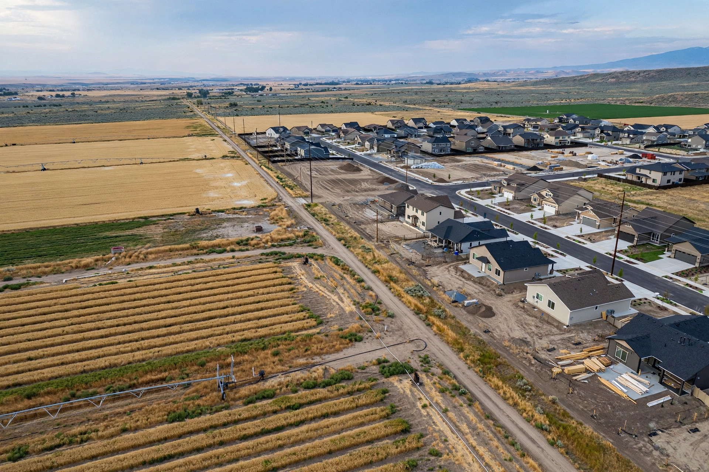
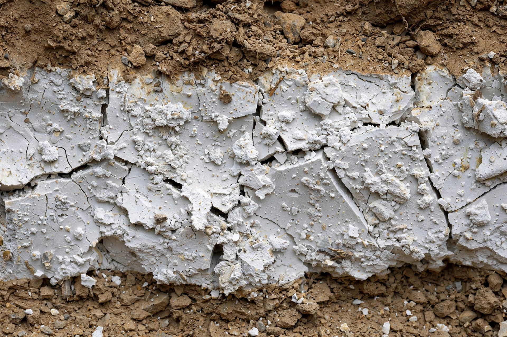
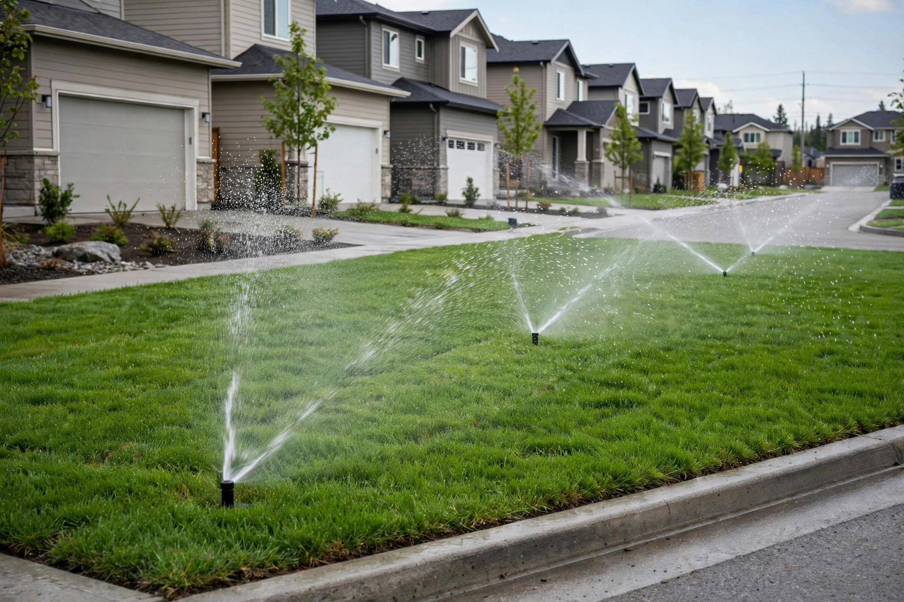
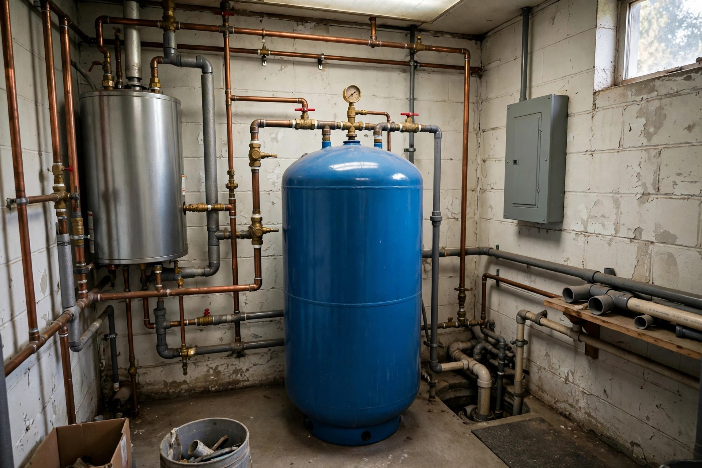
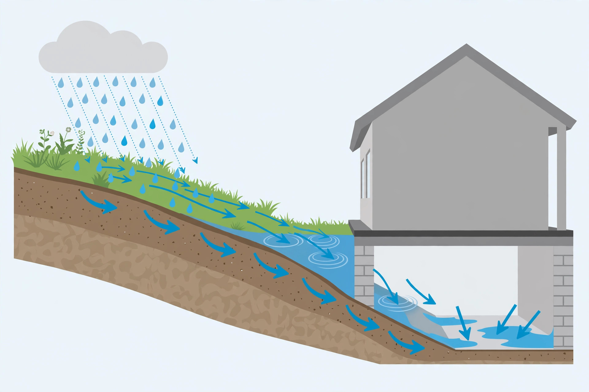

Mold Remediation in Kuna, ID
Kuna has grown from a small farm town into one of the fastest-growing cities in the valley. Shallow basalt, hardpan soils and brand-new homes on old irrigated fields shape how water behaves around foundations here.

Kuna homes, era by era
Small older homes and farmhouses, some on cellars or shallow crawlspaces.
Manufactured and site-built homes on wells and septic systems.
First wave of tract homes, mostly crawlspace foundations.
Rapid new construction; tight envelopes, young landscaping.
What Kuna homeowners run into

Hardpan & shallow basalt
Water from irrigation and roofs can’t soak down through caliche or lava rock, so it moves sideways — often toward the nearest crawlspace.

Overwatered new landscaping
New sod and pressurized irrigation running hard to establish lawns soak the soil beside foundations.

Well & pressure-tank leaks
Rural homes with wells have pressure tanks and lines in pump houses and closets that can leak unnoticed.
A typical Kuna project looks like this
Two-year-old home in a north Kuna subdivision
During the first full irrigation season, the new owners notice a musty smell from floor registers. In the crawlspace, a corner below the front lawn has standing water on the vapor barrier and white growth on the rim joist.
- Sprinkler zones adjusted; downspout extended.
- Water pumped off the barrier; joists cleaned in containment.
- Barrier re-sealed and overlapped at seams.
- Builder notified in case it falls under warranty.

Kuna mold questions
Why is my new Kuna home’s crawlspace wet?
On new lots, it’s usually surface water: fresh sod watered heavily, sprinklers spraying the foundation, and soil that hasn’t settled. Hardpan underneath keeps that water near the surface.
Can a leaking well pressure tank cause mold?
Yes. Slow drips from a tank or fitting in a closet or pump house can soak flooring and walls for months. Check fittings for corrosion and add a drip pan with a leak sensor.
How often should I check my crawlspace in Kuna?
Twice a year is a good habit — once in mid-summer during irrigation, and once in late winter for freeze damage.
Who handles building permits in Kuna?
The City of Kuna Building Department issues permits for repair work inside city limits; rural properties fall under Ada County Development Services.